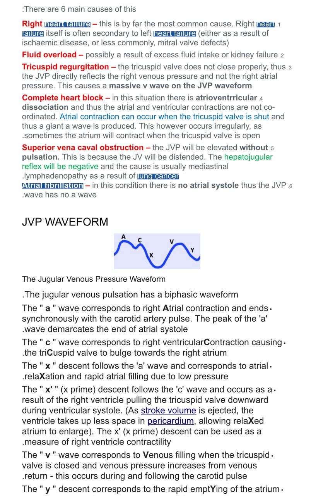
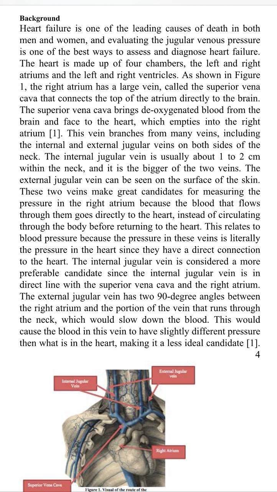
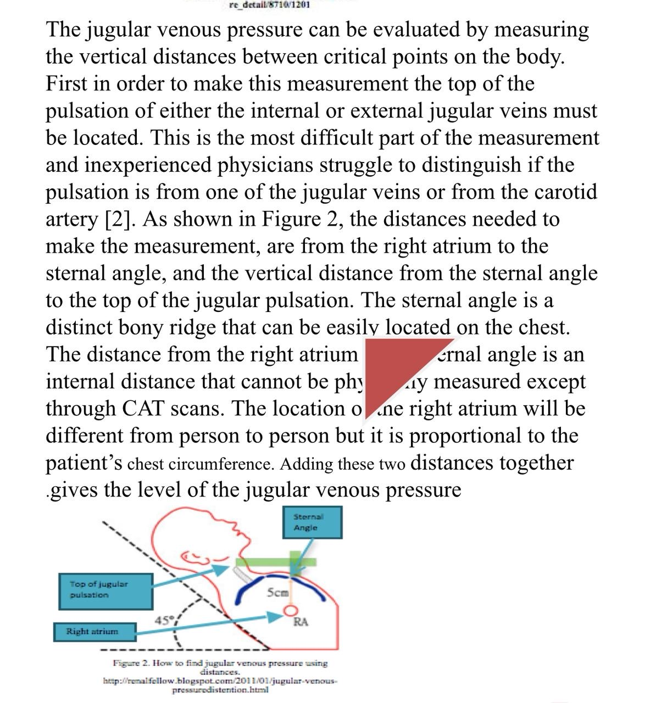
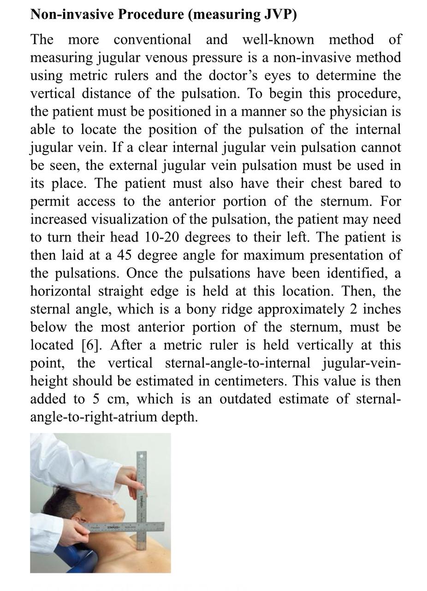
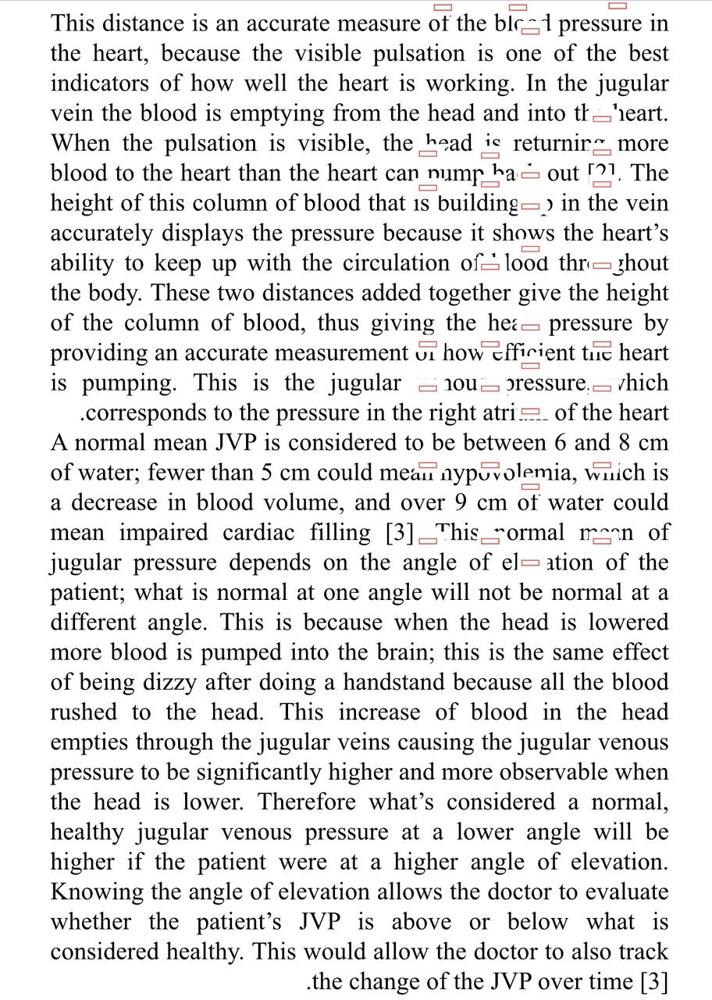
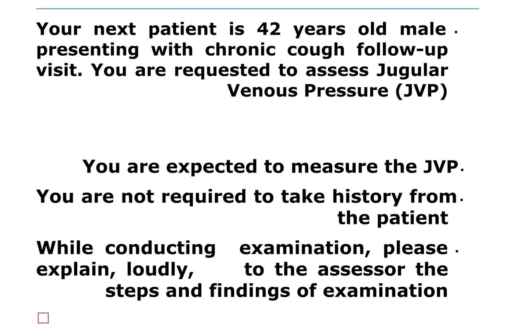

By the end of this session, you should be able to:
Understand the anatomy of jugular veins and their relation to the right atrium
Correctly position the patient for JVP examination
Identify and measure the jugular venous pulsation
Interpret JVP waveform abnormalities (a, c, x, v, y waves)
Recognize clinical significance of elevated or decreased JVP
Check for Kussmaul sign and other special findings
📌 Clinical Pearl:
The JVP is the best bedside indicator of right atrial pressure and volume status. Normal JVP = 6-8 cm H2O (measured from sternal angle + 5 cm).
📖 JVP Waveform & Anatomy

📊 JVP Waveform Components
The biphasic waveform showing a, c, v waves and x, y descents. Each component corresponds to specific cardiac events.

🫀 Jugular Vein Anatomy
Internal and external jugular veins showing their path from the brain to the right atrium via the superior vena cava.
📏 Measurement Technique

📐 How to Measure JVP
Measure vertical distance from sternal angle to top of jugular pulsation, then add 5 cm for right atrium depth.

👨️ Non-Invasive Procedure
Patient positioned at 45°, head turned left, using metric ruler to estimate vertical height of pulsation.

✅ Normal JVP Values
Normal = 6-8 cm H2O | <5 cm = hypovolemia | >9 cm = elevated (heart failure, fluid overload)
📋 Clinical Scenario

🏥 OSCE Station Instructions
42-year-old male with chronic cough follow-up. Assess JVP. Explain steps loudly to assessor during examination.
🔍 JVP Interpretation Guide
⚠️ Causes of Elevated JVP
Right heart failure - most common cause
Fluid overload - excess fluid intake or kidney failure
Tricuspid regurgitation - causes massive v wave
Complete heart block - cannon a waves
Superior vena caval obstruction - elevated without pulsation
Atrial fibrillation - no a wave
✅ JVP Waveform Abnormalities
Cannon a-waves: AV dissociation (third-degree heart block)
Large v waves: Tricuspid regurgitation
Absent a waves: Atrial fibrillation
Kussmaul sign: Paradoxical JVP rise on inspiration (constrictive pericarditis)
Friedreich's sign: Exaggerated x descent (constrictive pericarditis)